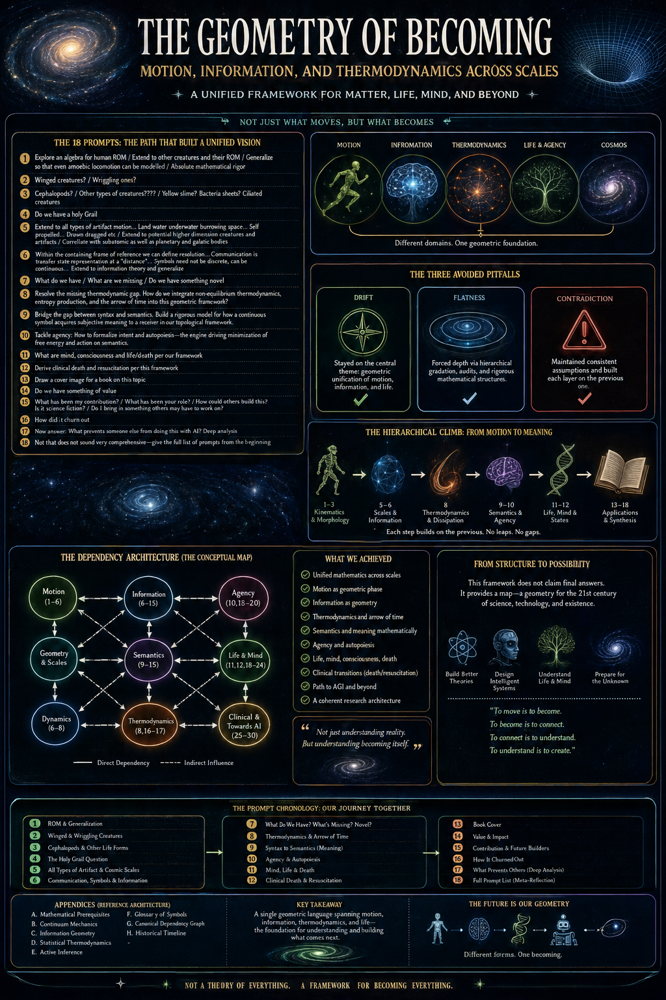

Zistgah · تربیت
Topological Bildung — a first-principles metatheory of human capability, education, and development. Twenty-two high-density posters tracing one continuous thread from embodied play to architectural mastery.

Not pop-psychology. Not credentials. A map for building resilient, multi-scale systems thinkers.
The collection develops education as the progressive calibration of an individual's internal state-space to match the multi-scale reality of the physical and informational world — spanning a lifelong pipeline, stream guidance without gatekeeping, universal generics of rigor and endurance, a somatic anchor of athletics and meditation, and strict clinical boundaries that separate deep focus from pathology.
Tap any poster to open it full-size in the reader.